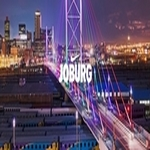

Which City?
Joburg

Johannesburg, also known as Jozi,
Joburg, Egoli or City of Gold, was founded in 1886 due to the discovery of gold. It is currently the
most
visited city of the African continent, and for a reason. Johannesburg has a very rich history and a
diverse
cultural scene. There are plenty of interesting things to do in Johannesburg to keep you busy for a
while.
Did you know that Johannesburg is home to the largest man-made “urban” forest and has the largest “dry
port”
in the world? I have spent a lot of time in Joburg and while writing the previous article ‘Interesting
facts
about Johannesburg‘, I was pleasantly surprised to still discover many fascinating things about this
city.